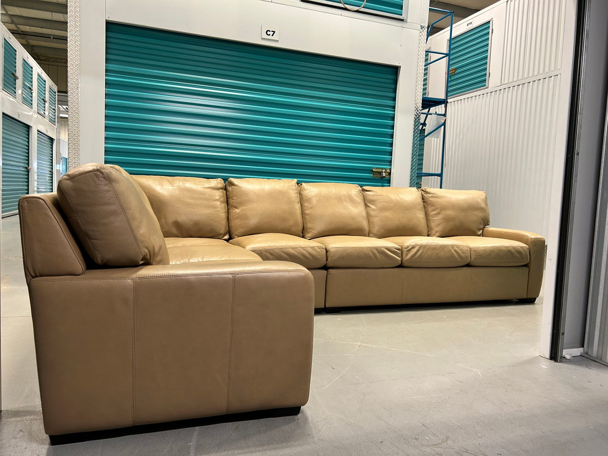

What a sectional sofa costs depends far more on the model, size, features, and upholstery than on the word “sectional”. A fixed budget can also buy different things new and pre-owned. To compare them usefully, compare specific pieces: the same or similar models, in similar sizes, with their total cost to get into your home and what each comes with. This guide explains what sets the price, shows how configuration, size, upholstery, and features affect the new retail price of three sectional models we’ve handled ourselves, and walks through setting a budget and comparing the pieces actually available to you.
What Sets the Price of a Sectional Sofa
- Size and number of pieces. More modules mean more frame, cushions, and upholstery. A two-piece sofa-and-chaise and a six-piece L are different purchases even from the same retailer.
- Configuration. Chaises, corner pieces, armless modules, and ottomans each change the price, and so does choosing a longer or deeper version of the same model.
- Mechanisms. Power recliners, adjustable headrests, and built-in charging add parts and cost.
- Upholstery. Makers price fabrics and leathers in grades, so the same model can cost more in one cover than another. Performance fabrics and leather usually sit higher than a standard fabric; our guides to leather and fabric sofas explain the terms.
- Construction. The frame, suspension, and cushions vary from model to model; our guide to judging a sofa’s quality covers what to look for in a specification.
- How it’s made and sold. Made-to-order pieces, custom fabrics, and memberships or trade programs all affect what you actually pay.
What Changes When You Compare New and Pre-Owned
Both new and used prices are market prices. A new price covers an unused piece, usually with the maker’s warranty and the retailer’s terms, along with the choice of configuration and fabric, a showroom where you can sit on it, and the retailer’s delivery and returns arrangements. A used price reflects the piece’s condition, how many similar pieces are available, how much demand there is for that model, and the terms of the sale, which are often as-is. A business that resells furniture also has its own costs for preparation, storage, marketing, and delivery.
A used piece usually costs less than the same model new, which is what can put a higher-priced model within a mid-range budget. How much less varies with the model, its condition, and how many similar pieces are for sale at the time. A higher original retail price doesn’t on its own make a used piece the better buy. What matters is whether that particular piece fits, is comfortable, is in good condition, and costs less in total than a new option you’d be equally happy with.
New Retail Prices for Models We’ve Handled
These three models show how much configuration, size, upholstery, and features move a sectional’s new price. We’ve had each of them through our own inventory. The prices are the makers’ listed Canadian prices on the product pages linked below, before tax and delivery, as of October 13, 2026, when this guide was written. Dimensions are width × depth × height, in inches. They’re reference points, not what you’d necessarily pay: sales, member pricing, and fabric choices can change the price, so check the current price before you compare.
| Model | Configuration & Dimensions | Construction | New retail price CAD |
|---|---|---|---|
| Rove Concepts MiloWe’ve sold this model | 4-piece modular sectional 133.4 × 78.7 × 31.5 in | Frame: kiln-dried hardwood Upholstery: Alesund fabric Cushions: high-density foam topped with goose feathers | $3,359 with a $250 annual membership |
| Crate & Barrel ArisWe’ve sold this model | Sofa and chaise sectional 109 × 69 × 31.25 in | Frame: hardwood Upholstery: Thrive performance fabric (olefin) Cushions: polyfoam and feather-down seats, polyfibre backs | $4,838 |
| Crate & Barrel Lounge | 6-piece modular sectional with 2 power recliners 142 × 109 × 37 in | Frame: kiln-dried hardwood Upholstery: Taft fabric Cushions: polyfoam seats wrapped in fibre and feather-down, fibre-down backs | $13,144 |


The table gives new prices only. Used asking prices vary with condition and availability. Any sectionals we have for sale right now are listed below with their asking prices, and they leave this page when they sell; all our pieces are in our current inventory. An asking price is what a seller wants for one specific piece, not what it sold for. To compare a used piece you find, set its asking price against what the same configuration and cover would actually cost new today, including any sale or member price and the fee needed to get it, then adjust for condition and everything below.
Sectionals we have for sale right now: Crate & Barrel Lounge 6-Piece L-Shaped Power Dual-Reclining Sectional — Mossa Chenille ($7,500 CAD).
What the table shows: how much the new price depends on size and features. The two-piece Aris lists at CAD 4,838 and the six-piece Lounge, with two power recliners, at CAD 13,144, from the same retailer; much of that gap comes from four more modules and the reclining mechanisms. Configuration and upholstery move the price within a single model too: on the same date, the five-piece Lounge listed at CAD 11,595, and the Aris two-piece in leather at CAD 8,098, against CAD 4,838 in Thrive fabric. The Milo shows the other variable: the price you actually pay can depend on a membership or a sale. Rove’s membership page lists the membership at CA$250 a year, with a standard member discount of 25% and, when we checked, a limited-time higher discount; include the fee if you count the member price.


Compare the Total Delivered Cost
For each piece you’re considering, add up:
- The price, including tax where it applies. Alberta has no provincial sales tax; a retailer adds the 5% GST, which comes to about CAD 242 on the Aris at CAD 4,838. Ask any seller whether tax applies to their price.
- Fees, such as a membership needed for a member price.
- Getting it home: the retailer’s delivery fee for a new piece; for a used one, the seller’s delivery fee, or the cost of a vehicle and help to collect it.
- Any work it needs, such as cleaning or repair on a used piece.
Keep waiting time and your own effort separate from the cash total, but weigh them too. Our guide to pricing a used sofa covers how to judge a used asking price against comparable pieces.
How Much Should You Pay for a Good Sectional? Setting a Budget
- Start from the room. Measure the space and the route in, and decide the size and configuration that fit. That rules out pieces before price comes into it.
- Separate needs from wants. Decide which features you’d pay more for, such as a chaise, power recliners, performance fabric, or leather, since each moves the price.
- Price two or three new models that fit, at the price currently available for that configuration and cover, including any sale and any membership fee needed for a discount. That gives you a ceiling and a reference point.
- Look for those models, or similar ones, used, and set each asking price against what the same configuration and cover would cost new today, adjusted for its condition. Our guide to furniture condition grades explains what the grades mean.
- Add the total delivered cost for each option, as above, and leave room for cleaning or a repair on a used piece.
- Decide which trade-offs you’ll accept: waiting for a made-to-order piece, buying as-is, or choosing from what’s available rather than configuring your own.
A good price is one that fits your total budget for a piece that fits the room, is comfortable, and is in the condition you expect, not a fixed share of the original price.
When Buying New Makes Sense, and When Pre-Owned Does
New tends to suit you if:
- you want a specific configuration, size, or fabric from the maker’s options;
- you want an unused piece with the maker’s warranty and the retailer’s return terms;
- you want a straightforward process: try it in a showroom, order, and get a delivery date;
- you’re after a current style that hasn’t reached the used market yet.
Pre-owned tends to suit you if:
- you’re flexible on brand, configuration, colour, and timing, since good pieces turn up unpredictably;
- you’d rather put your budget into a higher-priced model than into a new one at the same total;
- you’re prepared to check condition carefully and accept that most used sales are final.
Used, a recognized brand and model help: you can look up the maker’s construction and current price for the same piece. An unbranded sectional is harder to compare, so judge it on condition, fit, and comfort. Our guide to sofa and sectional brands that hold their value covers what we’ve seen from specific makers.
Buying Pre-Owned: What Different Sellers Provide
A pre-owned sectional from a private seller and one from a furniture resale business can come with quite different preparation and terms, and so can two businesses. Rather than assuming one is better value, compare what the actual seller provides against its price:
- Inspection and condition disclosure: whether the piece has been checked, and how specifically its wear is described.
- Cleaning or other preparation before sale.
- Information: detailed photos, measurements for each piece, and the maker and model.
- Viewing: whether and where you can see and sit on it before you commit.
- Delivery: whether it’s offered, and what it costs, or whether you collect it yourself.
- Payment, returns, and other sale terms, in writing.
A business price may include some of these, and a private price may not need to. Whether that’s worth the difference depends on what you’d otherwise have to arrange or accept yourself. Our guide to buying from a private seller or a reseller compares the two in more detail.
Condition, Configuration, Availability, Returns, and Warranty
- Condition: a new piece is unused, though defects can still happen. A used piece needs checking in person; our guide to buying a used sofa covers what to look at.
- Configuration and fabric: buying new lets you choose from the maker’s options, within what it offers for that model. Used, you choose from what’s available, though some modular pieces can be rearranged; our guide to selling a sectional explains how to tell.
- Availability: new delivery times range from about 4 to 20 or more weeks, depending on the maker and whether you order a version it stocks or customize it, for example with a specific fabric. A used piece is available now if you find the one you want, which can take time.
- Returns: new retailers’ policies vary, and custom orders can have different terms; Crate & Barrel’s Aris page says custom items can’t be modified, cancelled, exchanged, or returned. Used sales are often final; ask before you pay.
- Warranty: new pieces usually come with the maker’s warranty; Rove’s page lists a five-year limited warranty on the Milo. Check what it covers, and if you’re buying used, whether any remaining coverage transfers to you.

How to Choose Between the Pieces Available to You
Put the actual options side by side, new and used, and compare:
- Fit: the room and the route in. Our guide to measuring a sectional sofa covers both.
- Comfort: sit on it, or compare its seat depth and height with a sofa you find comfortable.
- Condition, and what any work would cost.
- Availability, and when you could have it.
- Delivery, its cost and timing.
- Return terms and warranty coverage.
- The total cost.
Our listings give each piece’s measurements, its condition grade with a note on what we found, and its original retail price where we have one. We clean each piece before listing it, you can request a viewing, and we deliver across Edmonton and the surrounding area for an additional fee. Our pieces are sold as-is and all sales are final. If you have a sectional to sell instead, our page on selling a sectional covers what we consider.